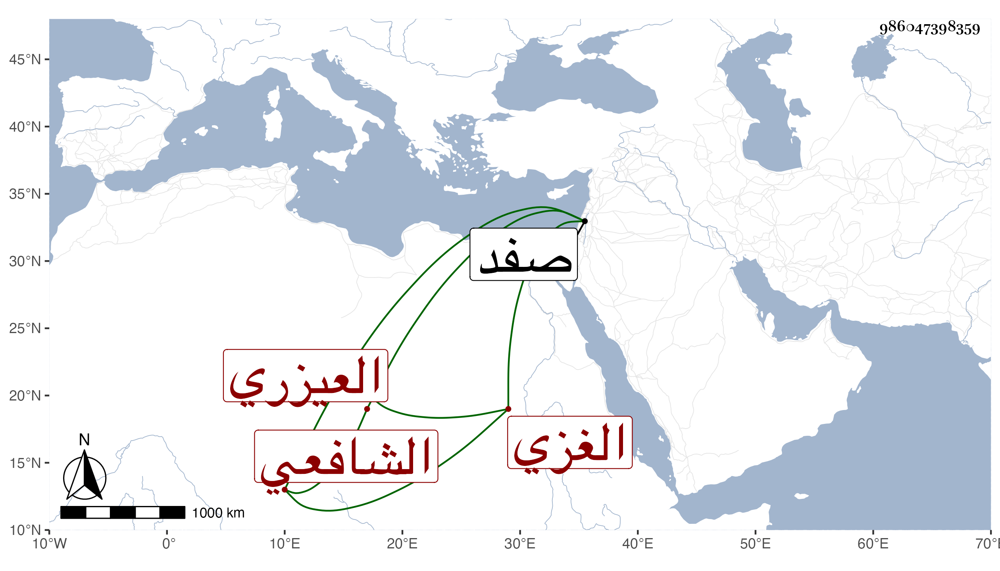

0902Sakhawi.DawLamic.ITO20230111-ara1.EIS1600.986047398359
Biography ID: 986047398359
998
يحيى بن علي بن محمد الشرف العيزري الغزي الشافعي من ذرية الشمس العيزري العالم الشهير الماضي . تكسب في بلده شاهدا عند قاضيه الشمس بن النحاس ثم استنابه فوثب عليه ، واستقل هو بالقضاء في صفر سنة سبع وثمانين ، ثم عزل بعد قليل وعوض من أجل ما بذله بقضاء صفد عوضا عن ابن يونس فدام قليلا ثم صرف وحضر إلي مع صهره أبي الخير بن جبريل وأعيد لغزة ثم صرف في ربيع الآخر سنة تسعين بابن النحاس وهو الآن يتجر بعد أن أعيد له ما كان بذله فيما قيل ثم أعيد في سنة تسع وتسعين حين الترسيم على ابن النحاس وأهين هذا من النائب على رسمه زعم .
